Constraints Satisfaction Problems¶
Features and Variables¶
Describing the world (environment) by features:
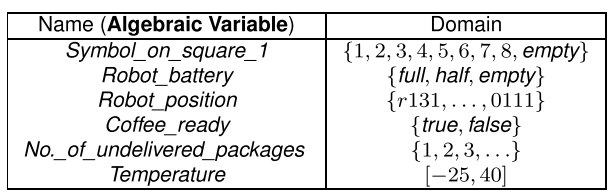
A possible world for a set of variables is an assignment of a value to each variable.
Example (Cooking):
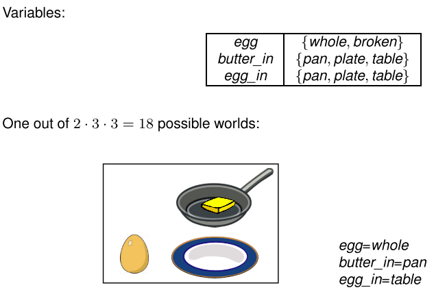
Constraint Satisfaction Problems¶
A constraint is a condition on the values of variables in a possible world.
Can be specified with:
Extensional Constraint Specification¶
Explicitly list all allowed (or disallowed) combination of values:
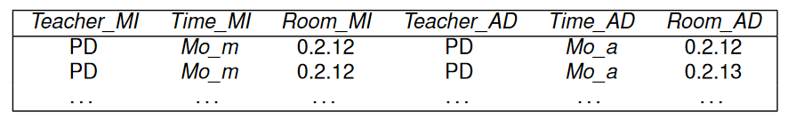
Not on the list of allowed possible worlds:
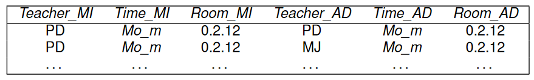
Intensional Constraint Specification¶
Use logical expressions:
- If teacher for AD and MI is the same, then the time of AD cannot be the same as time of MI.
Example: Sudoku¶
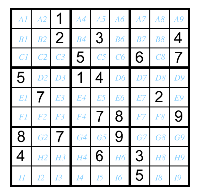
Constraints:
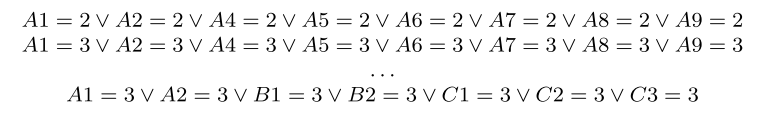
Definition¶
A Constraint Satisfaction Problem (CSP) is given by
- a set of variables
- a set of constraints (usually intensional)
A solution to a CSP consists of a possible world that satisfies all the constraints (also called a model of the constraints)
CSP as State Space Problem¶
A CSP can be represented as a state space problem:
- States are all partial assignments of values to variables that are consistent with the constraints
- For a state s: select some variable V not assigned a value in s, and let the neighbors of s be all states that assign a value to V (if any exist)
- The start state is the state that does not assign any values
- A goal state is a state that assigns values to all variables
Solving the CSP¶
-
A solution to the state space problem is a path with a goal state at the end:
- A solution to the CSP problem
-
To solve the state space problem need only be able to:
- enumerate all partial assignments that assign a value to one or more variable than s
- check whether a partial assignment is consistent with the constraints
(That is sufficient to implement the get_neighbors and goal functions needed in the generic search algorithm)
Example¶
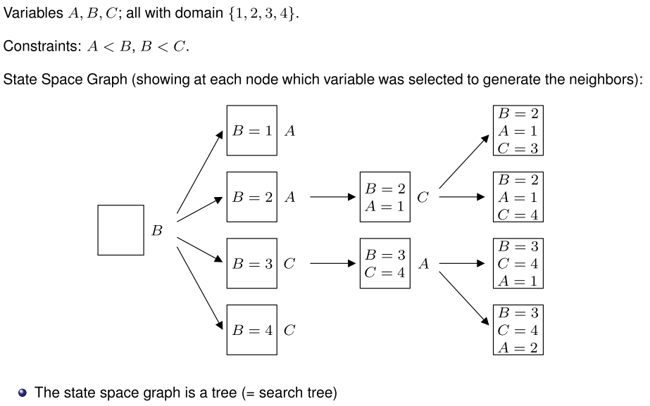
Consistency Algorithms¶
Idea
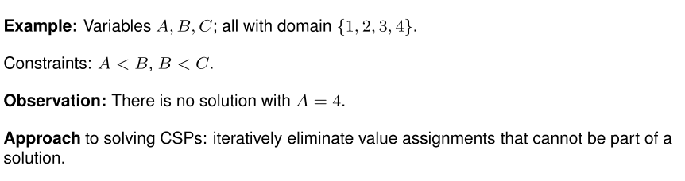
Constraint Network¶
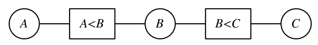
The constraint network for a CSP consists of:
- 1 (oval) node for each variable X
- 1 (rectangular) node for each constraint c
- An (undirected) arc \langle X,c \rangle between every constraint and every variable involved in the constraint
With each variable node X is associated a (reduced) domain D_X:
- Initially the domain of the variable
- Reduced by successively deleting values that cannot be part of a solution
Arc Consistency¶
An arc \langle X,c \rangle is arc consistent, if
- For all x\in D_X there exists values y_i,...,y_k for the other variables involved in c, such that x,y_i,...,y_k is consistent with c
A constraint network is arc consistent, if all its arcs are arc consistent
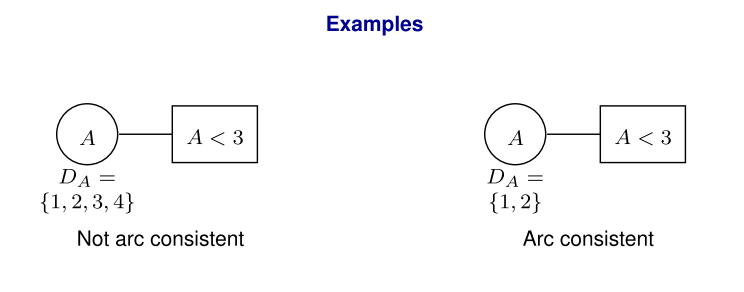
Examples
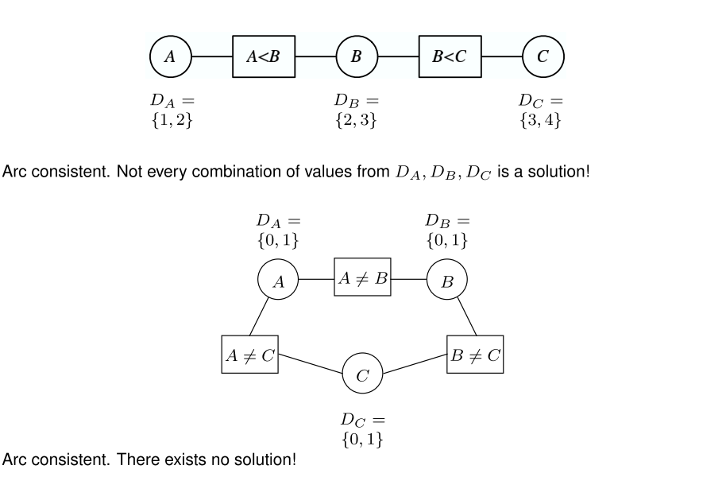
Algorithm Outline¶
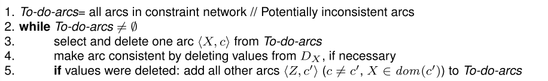
Example: Slide 18 (Appendix of this page)
Algorithm Outcomes
Algorithm is guaranteed to terminate. Result independent of order in which arcs are processed.
Possible cases at termination:
-
D_X=\empty for some X:
- CSP has no solution
-
D_X contains exactly one value for each X:
- CSP has unique solution, given by the D_X values.
- Other
- If the CSP has a solution, then the solution can only consist of current D_X values
Variable Elimination¶
- Simplify problem by eliminating variables
Operates on extensional (table) representations of constraints
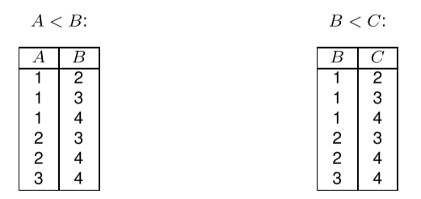
Algorithm requires projection and join operations on tables
Project¶
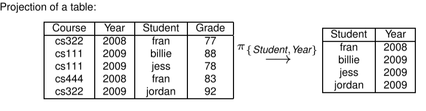
Join¶
Given two tables r_1, r_2 for variables vars_1,vars_2.
The join is the table r_3=r_1 \bowtie r_2 for variables vars_1 \cup vars_2 that
- contains all tuples, which restricted to vars_1 are in r_1, and restricted to vars_2 are in r_2
Example¶
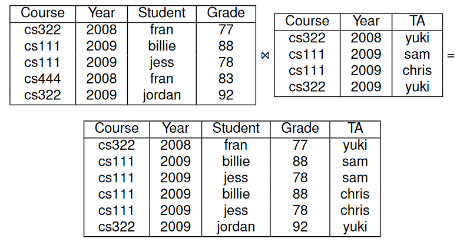
Algorithm Outline¶
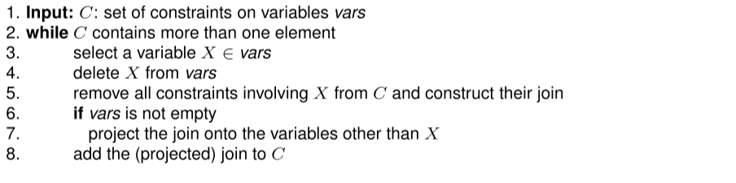
Example slide 24 (Appendix of this page)
Properties¶
- The algorithm terminates
- The CSP has a solution if and only if the final constraint is non-empty
- The set of all solutions can be generated by joining the final constraint with the intermediate "summarizing" constraint generated in line 5.
- Algorithm operates on extensional constraint representations, therefore
- constraints must not contain too many tuples (initial and constructed constraints)
- Worst case: VE is not more efficient than enumerating all possible worlds and checking whether they are solutions
Constraint Graph¶
Consider the graph where
- there is one node for each variable
- two variables are connected when they appear together in one constraint
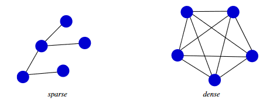
Then VE will work better if the constraint graph is sparsely connected!
Local Search¶
So far all methods systematically explored the state space (possible worlds)
Problem: Time and space when search space is large
Local Search approach:
- Explore state space without "bookkeeping" (where have we been, and what needs to be explored?)
- no success/terminatiuon guarantees
- in practice, often the only thing that works
Another state space graph representation for CSPs:
- Nodes are possible worlds
- Neighbors are possible worlds that differ in the value of exactly one variable
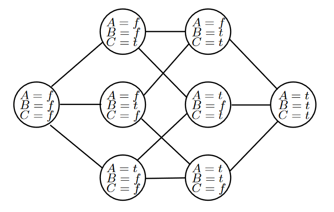
Algorithm Outline¶
1 2 3 | |
Random Search¶
- Make choices in line 1. and 3. completely random
- "Random Walk"
- Unlikely to find a solution if state space is large with only a few solutions
Greedy Search¶
AKA Hill Climbing.
- Use an evaluation function on states
- Example: number of constraints not satisfied by state
- Always choose neighbor with minimal evaluation function value
- Terminates when all neighbors have higher value than current state
- (Current state is a local minimum)
Possible greedy search paths starting from different states:
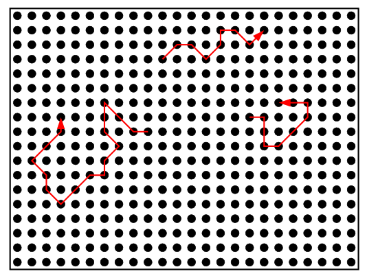
Problem¶
Search terminates with local minimum of evaluation function. This may not be a solution to the CSP
Solution Approaches¶
- Random restarts
- repeat greedy search with several randomly chosen initial states
- Random moves
- combine greedy moves with random steps
Examples
a) Small number of random restarts will find global minimum
b) Make random move when local minimum reached
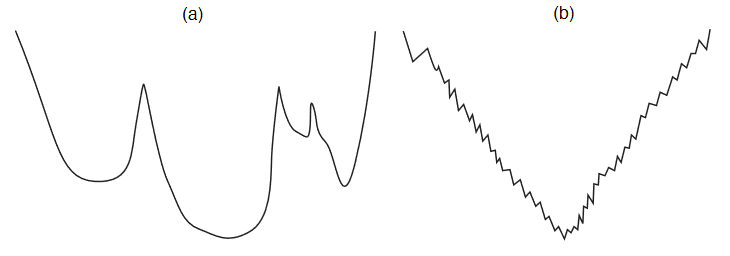
Local Seach¶
- Maintain an assignment of a value to each variable
- At each step, select a "neighbor" of the current assignment (e.g. one that improves some heuristic value)
- Stop when a satisfying assignement is found, or return the best assignment found
Requires
- What is a neighbor?
- Which neighbor should be selected?
Most Improving Step¶
Select the variable-value pair that gives the highest improvement
- Maintain a priority queue with variable-value pairs not part of the current assignment
- Weight\langle X,v \rangle=eval(current\ assignment)-eval(current\ assignment\ but\ with\ X=v)
- If X is given a new value, update the weight of all pairs participating in a changed constraint
Two-Stage Choice¶
- Choose variable
- Choose state
Data Structure
- Maintain priority queue of variables; weight is the number of participating conflicts
- After selecting a variable, pick the value minimizes the number of conflicts
- Update weights of variables that participate in a conflict that is changed
Simulated Annealing¶
Algorithm
- Pick a variable at random and a new value at random
- If it is an improvement, adopt it.
- If it isnt an improvement, adopt it probabilistically depending on a temperature paramenter, T
- With current assignment n and proposed assignment n' we move to n' with probability:
- Reduce the temperature
Probability of Accepting a Change
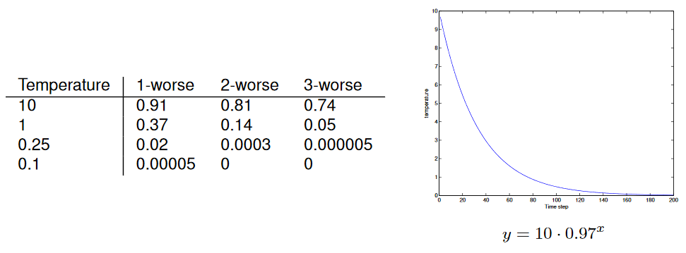
Propositional Logic Basics¶
Provides a formal language for representing constraints on binary variables
Syntax¶
Atomic Propositions¶
Convention: Start with lowercase letter
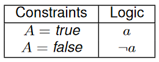
Propositions¶
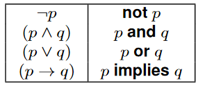
A set of propositions is also called a Knowledge Base
Example¶
"If it rains I'll take my umbrella, or I'll stay home"
Semantics¶
Interpretation¶
An interpretation \pi for a set of atomic propositions a_1,a_2,...,a_n is an assignment of a truth value to each proposition
- Equal to possible world when atomic propositions seen as boolean variables
An interpretation defines a thruth value for all propositions
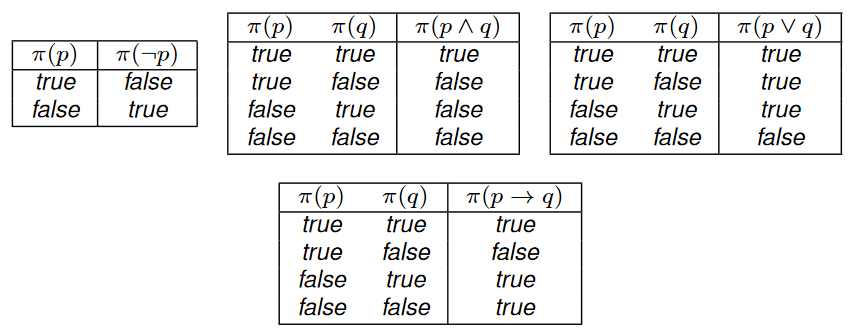
Models¶
A model of a proposition (knowledge base) is an interpretation in which the proposition is true
Propositions as constraints: a model is a possible world that satisfies the constraint
Logical Consequence¶
A proposition g is a logical consequence of a knowledge base KB, if every model of KB is a model of g
(Whenever KB is true, then g is also true)
Example¶
KB=\{man\to mortal,man\} then:
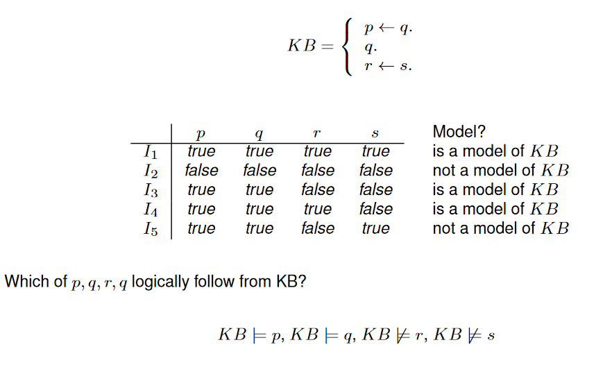